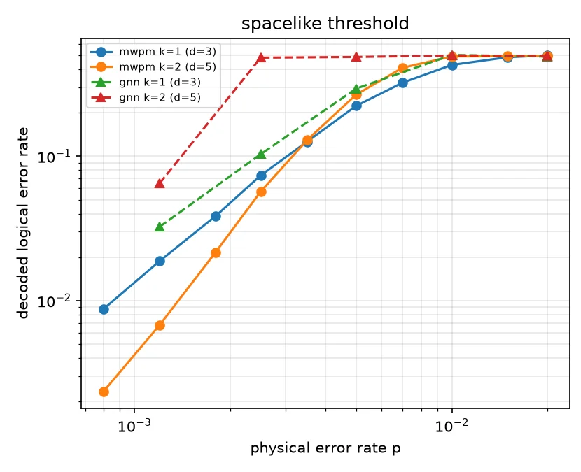

PyTorch Geometric · Stim · TQEC · PyMatching
SurgeryNet
A graph-neural decoder for lattice surgery: the first learned-decoder error rates on merge and split operations. MLP and CNN decoders can't transfer to surgery at all.
1.08×of MWPM, spacelike
1.09×of MWPM, timelike